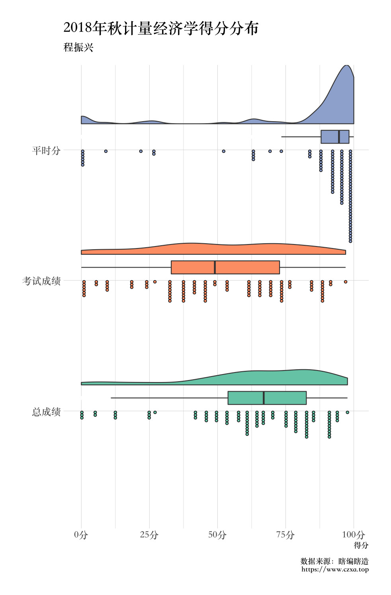

第 9 章 计量经济学课程的得分分布！
虽然计量的最终分数还没完全确定，我现在只有一个初稿，于是就画了幅rainplot。
只有平时分、考试分、按照四六开计算的总分的变量的数据集可以在这里下载：econometrix_score.csv。
library(tidyverse)
library(gglayer)
df <- read_csv("econometrix_score.csv")
df %>%
mutate(
id = 1:nrow(df)
) %>%
gather(homework, testscore, totalscore,
key = "type", value = "score") %>%
mutate(
type = factor(type, levels = rev(c("homework", "testscore", "totalscore")),
labels = rev(c("平时分", "考试成绩", "总成绩")))
) %>%
ggplot(aes(x = type, y = score, fill = type)) +
geom_flat_violin(position = position_nudge(x = 0.2)) +
geom_dotplot(binaxis = 'y',
stackdir = 'down',
dotsize = 0.3) +
geom_boxplot(width = 0.1, position = position_nudge(x = 0.1),
outlier.color = "white") +
guides(fill = "none") +
labs(y = "得分", title = "2018年秋计量经济学得分分布",
subtitle = "程振兴", caption = "数据来源：瞎编瞎造\nhttps://www.czxa.top") +
theme(axis.title.y = element_blank()) +
scale_fill_brewer(palette = 'Set2') +
scale_colour_brewer(palette = 'Set2') +
scale_y_continuous(
breaks = seq(0, 100, by = 25),
labels = formattable::suffix(seq(0, 100, by = 25), "分")
) +
coord_flip()
可见，我这个助教已经在平时分上尽力了！